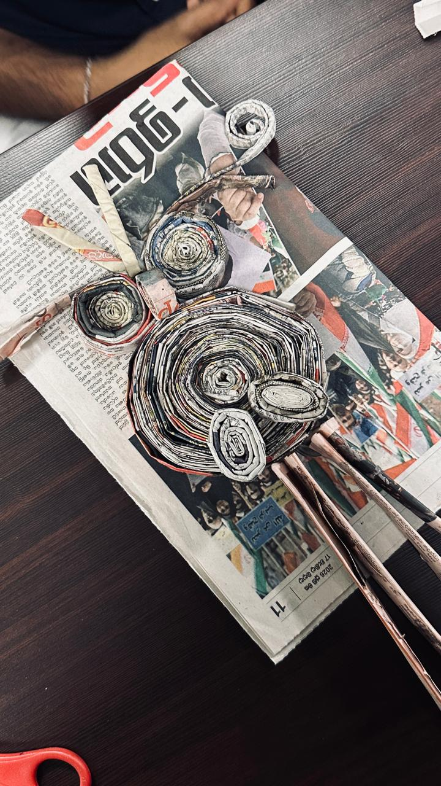
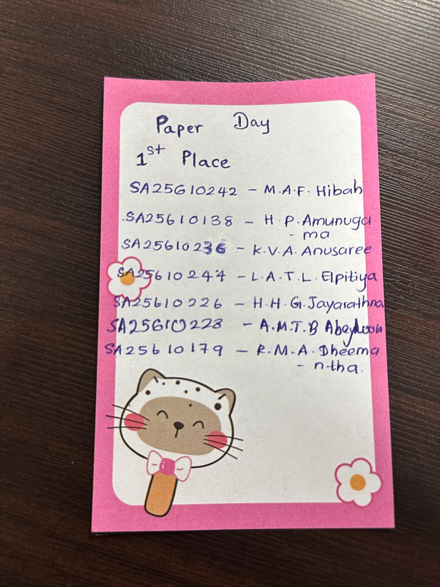
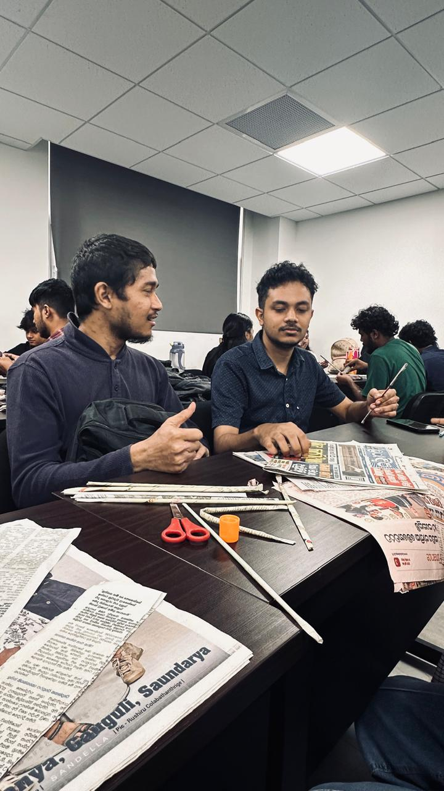
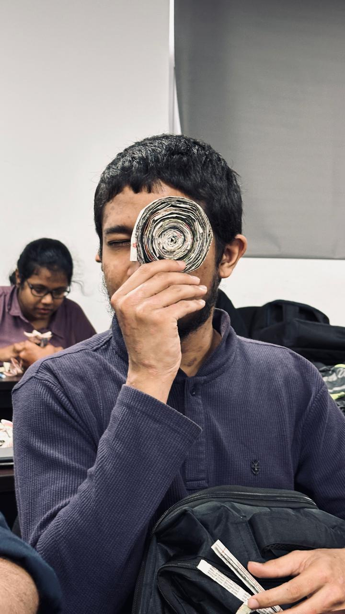
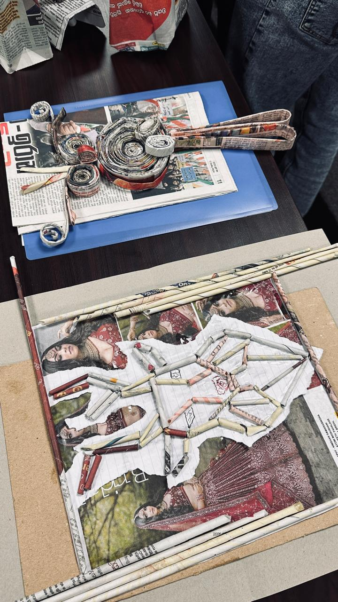
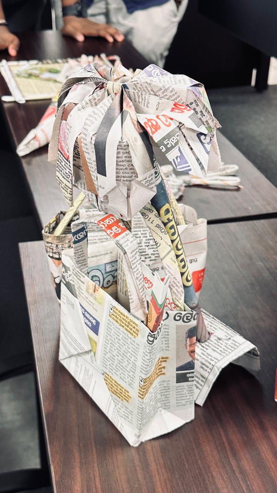
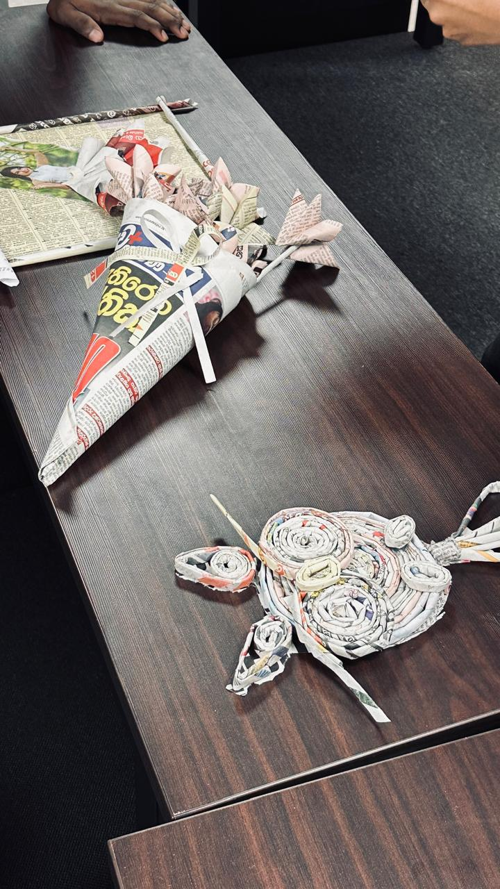
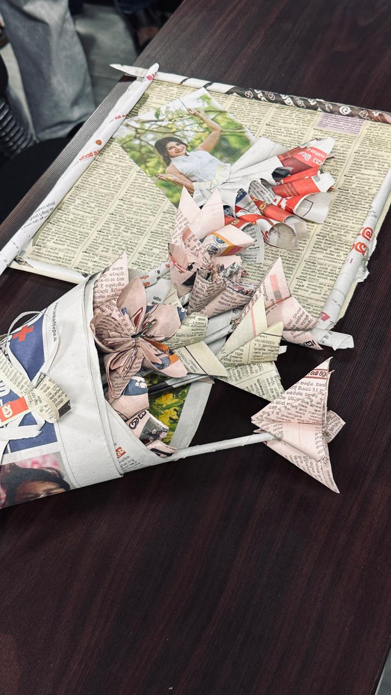

PROFESSIONAL SKILLS / SESSION 03
Time Management
Paper Day
Planning, creativity, and teamwork through recycling.
Overview
Planning, creativity, and teamwork through recycling.
Learning outcomes
- Plan and work efficiently within a limited time.
- Use creative problem-solving in a team.
- Recognize the value of recycling and environmental awareness.
Activities
Recycling newspapers into useful products as part of a time management challenge.
My reflection
This creative session focused on time management, teamwork, and environmental awareness through recycling newspapers into useful products. It helped me understand the value of planning, creativity, problem-solving, and working efficiently within a limited time.
Our Team, Our Creation
The people behind our newspaper owl, and the work we created together.





First place at Paper Day
Our team won first place in the Paper Day challenge with our newspaper owl. A proud moment that celebrated our teamwork, creativity, and shared effort.
Moments from Paper Day











